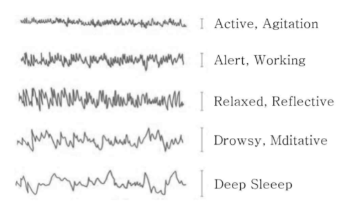

뇌파란 무엇인가?
뇌파의 정의
뇌파(EEG, Brain Wave)는 뇌에서 신경 사이에 신호가 전달될 때 발생하는 파동 형태의 신호이다. 중추신경계에서 측정되는 규칙적인 파동 신호도 포함하며, 이를 신경 진동(Neural Oscillation) 이라고 부른다.
특징
- 심신 상태에 따라 뇌파의 패턴이 달라짐
- 뇌의 활동 상황을 측정하는 핵심 지표
뇌파 밴드별 특징
뇌파는 주파수별로 여러 밴드로 구분되며, 각 밴드는 신경 활동, 수면 단계, 각성 상태, 주의력, 기억, 감정 등 다양한 인지 및 정신 기능과 밀접하게 연결되어 있어, 연구와 임상에서 뇌의 상태를 분석하는 중요한 지표로 활용된다.

1. 극서파, 서파 및 델타파 (Delta, 1-4Hz)
- 서파(Slow Wave): 1Hz 미만 진폭, 깊은 수면부터 고도 집중 상태까지 발생
- 극서파(Ultrslow): 0.1Hz 이하, 휴지기 두뇌 네트워크와 관련, 수십 초 단위 사이클
- 델타파(1-4Hz): 피질-시상 상호작용에 의해 생성, 수면 시 피질-시상 세포 과분극과 관련
- 특징: 지속적·리드미컬하지 않으면 병적 상태(뇌손상 등) 가능
2. 세타파 (Theta, 4-8Hz)
- 특징: 다양한 영역에서 독립적으로 발생
-
정상적 세타파:
- 정중 전두부: 인지 과제 수행 시 발생
- 해마/변연계: 기억과 관련된 상호작용
- 비정상적 세타파: 특정 ADHD 아형, 비표준 영역(Fz, Pz 이외)에서 나타남
- 주의: 세타파가 무조건 수면과 관련된 것은 아니므로 해석 주의 필요
3. 알파파 (Alpha, 8-13Hz)
- 특징: 매우 리드미컬, 눈을 감은 휴지기 상태에서 주로 발생
- 발견: Hans Berger, “첫 번째 파형”
-
활동:
- 눈 뜨거나 정신 업무 시 사라짐 → 베타파 등장
- 렘수면 전두-중심부에서 관찰 가능
- 비렘수면 중 알파침습 발생 → 델타파 출현 시점에 주로 나타남
- 기능: 휴지기, 꿈 회상, 소음 반응 등 정신생리적 조절
4. 베타파 (Beta, 12-30Hz)
- 특징: 알파파보다 빠른 주파수, 각성·집중과 관련
- 위치: 전두-중앙 부근에서 흔히 관찰
-
하위 밴드:
- 저베타(12-25Hz), 고베타(25-30Hz)
- 역사: 아날로그 EEG 시절엔 25-40Hz 미만만 분석 가능
- 활용: 주로 고립파(sporadic) 또는 리듬형(rhythmic) 발생
5. 감마파 (Gamma, >30Hz)
- 주파수 범위: 일반적으로 25-100Hz, 40Hz 대역이 주로 연구됨
- 기능: 지각·인지 통합, 고위 인지 기능 관련 가능성
-
측정 주의점:
- 60Hz 전류 잡음 제거 필요 (노치 필터)
- 고주파 특성상 특수 장치 필요
- 연구 동향: 디지털 EEG 보급과 함께 활발히 진행